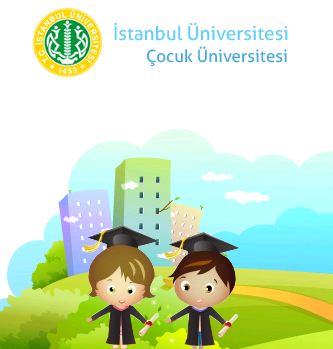

- Ebru Atölyesi
- Film ve Sinema Atölyesi
- Fotoğraf Atölyesi
- Ahşap Oyuncak - Marangozluk Atölyesi
- Arkeoloji ve Dinozorlar Atölyesi
- Felsefe Atölyesi "Çıtır Filozoflar"
- Karagöz-Hacivat / Gölge Oyunları Atölyesi
- Karikatür Atölyesi
- Keçe Atölyesi
- Kukla - Marangozluk Atölyesi
- Köpük Heykel Atölyesi
- Küçük Antropologlar-Kültür Dedektifleri Atölyesi
- Magnet - Kitap Ayracı - Anahtarlık Tasarımı Sanat Atölyesi
- Mask Atölyesi
- Mitoloji Atölyesi
- Mozaik Atölyesi
- Oyuncak Atölyesi
- Pasta Atölyesi
- Polimerkil Heykel Atölyesi
- Recyclable Enstalasyon Atölyesi
- Resim - Kolaj Atölyesi
- Robot Atölyesi
- Seramik Atölyesi
- Sihir Atölyesi
- Simya Atölyesi
- Stone Arts Atölye - "Taş Devri Ressamları"
- T-Shirt Boyama - Tasarım Atölyesi
- Takı - Aksesuar Atölyesi
- Tasarım - Craft Atölyesi "Maceranı Seç"
- Uzay ve Astronomi Atölyesi
- Yeniden Yarat Atölyesi


Haberler
MİNİKLERE KÜÇÜK KAŞİF ATÖLYELERİ
Oya Ural tarafından Cts, 09/06/2012 - 01:07 tarihinde gönderildi.LATERNA MAGICA & DEGA SANAT GALERİSİ
BAGDAT CADDESİ YAZ ATÖLYELERİ
Başlangıç Tarihi : 11 Haziran 2012
»
Laterna ile Marangozluk Atölyesi
Oya Ural tarafından Per, 07/06/2012 - 01:16 tarihinde gönderildi.Laterna ile Marangozluk Atölyesi
30 dakika kendi ahşap oyuncağını yarat, 30 dakika Nivokido oyuncakları ile oyna…
08 Haziran 2012 Cuma
15:00-16:00
5 yaş ve üzeri
40 TL / çocuk
Kapasitemiz 12 çocuk ile sınırlıdır. Daha fazla bilgi için [email protected] veya Tel : 0216 360 01 92
Nivokido Çocuk Gelişim & Eğitim
Mağaza : Bağdat Caddesi, Şaşkınbakkal
No 374 F – G / İstanbul
»
2011 Ramazan Eğlenceleri Programı
Oya Ural tarafından Paz, 31/07/2011 - 15:01 tarihinde gönderildi.

6 Ağustos Cumartesi Koçtaş Beylikdüzü "Ahşap Karagöz - Hacivat Yapımı Workshop"
13 Ağustos Cumartesi Bursa Carrefour "Otantik Takı Yapımı Workshop"
13 Ağustos Cumartesi İçerenköy Carrefour "Otantik Takı Yapımı Workshop"
20 Ağustos Cumartesi Koçtaş Beylikdüzü "Ramazan Davulu Yapımı Workshop"
20 Ağustos Cumartesi Bursa Carrefour "Otantik Takı Yapımı Workshop"
20 Ağustos Cumartesi İçerenköy Carrefour "Otantik Takı Yapımı Workshop"
27 Ağustos Cumartesi Koçtaş Beylikdüzü "Bayram Harçlıkları için Kumbara Yapımı Workshop"
27 Ağustos Cumartesi Bursa Carrefour "Otantik Takı Yapımı Workshop"
27 Ağustos Cumartesi İçerenköy Carrefour "Otantik Takı Yapımı Workshop"
"Cadılar Bayramı" Atölyeleri
Oya Ural tarafından Cts, 30/10/2010 - 23:20 tarihinde gönderildi.
LATERNA MAGICA
Mucizeler Atölyesi
"Cadılar Bayramı" Atölyelerini Gururla Sunar ...
31 Ekim Pazar
Saat 14:00-15:00 Sihir Atölyesi
Saat 15:30-16:30 Ahşap Oyuncak Atölyesi
Yer : İYİ CÜCELER KİTAPEVİ
Bağdat Cad. Yener Sok. 10/9 Erenköy
Rez : 0216 385 91 11
2010 - 2011 LATERNA MAGİCA SONBAHAR YENİLİKLERİ
Oya Ural tarafından Salı, 14/09/2010 - 06:50 tarihinde gönderildi.
"BACK TO SCHOOL"
2010 - 2011 LATERNA MAGİCA SONBAHAR YENİLİKLERİ
* EN YENİ Atölyeler
1-* Antropoloji Atölyesi
Küçük Antropologlarla Taş Devri insanından günümüz nano teknoji insanına uzanan bir çizgide farklı kültürlere doğru keşfe çıkıyoruz. Avustralya yerlilerinin hiç bilmediğimiz günlük yaşamlarını, kültürlerini öğreniken kendi kültürümzün de bakıp da görmediğimiz çok farklı yönleri ile tanışıyoruz. Antropoloji atölyemizde film, fotoğraf gibi görsel malzemelerin yanı sıra neolitik çağ insanının günlük yaşam objelerini ahşap,kil, çamur ve hamurdan kendimiz oluşturuyoruz. Haydi geleceğin araştırmacıları bilinmez ve sürprizlerle dolu bir dünyanın kapılarını birlikte aralayalım...
2-* Drama Atölyesi
Kendini ifade etmenin en güzel ve renkli yolu olan drama çalışmaları kendimizin dahi farkına varmadığımız içimizdeki diğer "ben" i ortaya çıkarmamızda keyifli bir yoldur. Kostümler, makyajlar ve aksesuarlarla "sahne" nin çekici ve parıltılı dünyasına davet ediyoruz küçük yıldızları...
3-* Perküsyon Atölyesi
Ritmin büyüleyici dünyasında ziller, tefler, marakaslar ve davullarla ritm duygumuzun gelişmesine yardım ederken unutulmaz, eğlenceli, bol sesli ve keyifli zamanlar geçiriyoruz...
Çocuk Üniversitesi
Oya Ural tarafından Per, 17/06/2010 - 14:25 tarihinde gönderildi.
LATERNA MAGICA Mucizeler Atölyesi 10 - 20 Ağustos 2010 Tarihlerinde "Ahşap Oyuncak - Kukla Marangozluk" ve "Mitoloji" Atölyeleri ile Çocuk Üniversitesi'nin Bodrum Felsefe Okulu'nda olacak.
Oya Cedidi Ural
LATERNA MAGICA
Mucizeler Atölyesi
Tel: 0216 550 69 15
GSM: 0535 396 79 58
E-posta: [email protected]
http://www.mucizeleratolyesi.com
Ataköy Plus Atölyeleri
Oya Ural tarafından Çar, 21/04/2010 - 13:02 tarihinde gönderildi.Laterna Magica 17, 18, 23, 25 Nisan ve 1, 2, 8 Mayıs tarihlerinde saat 14:00 ile 16:00 arasında, birbirinden eğlenceli ve öğretici atölyeleriyle birlikte Ataköy Plus AVM'de olacak.
Laterna Magica Uluslararası 26. Çocuk Şenliği
Oya Ural tarafından Çar, 21/04/2010 - 11:20 tarihinde gönderildi.Laterna Magica Uluslararası 26. Çocuk Şenliği'ne (13-23 Nisan 2010) 14-15-16 Nisan'da Ümraniye, Kâğıthane ve Gaziosmanpaşa'da düzenlediği atölyeler ile katıldı.
LATERNA MAGICA FİLM ve SİNEMA KULÜBÜ MOHİNİ'DE...
Oya Ural tarafından Per, 01/04/2010 - 10:34 tarihinde gönderildi.26 MART 2010 CUMA GÜNÜ BAŞLIYOR !
HER CUMA 19:00-21:00 SAATLERİ ARASINDA YETİŞKİNLERLE
KENDİ FİLMİNİZİ YAPMANIZA FIRSAT SUNUYORUZ...
MOHİNİ FİLM VE SİNEMA KULÜBÜ GURURLA SUNAR !
Yönetmen
Prodüktör
Yapımcı
Kameraman
Oyuncu
Hangisi Olmak İstersiniz ?
Florya Koleji Aktiviteleri
Oya Ural tarafından Çar, 31/03/2010 - 14:12 tarihinde gönderildi.ÇOCUĞUNUZ DÜNYAYA HANGİ PENCEREDEN BAKIYOR ?
Florya Koleji Bilim ve Sanat Atölyeleri olarak çocuğunuza yaşatacağımız farklı deneyimlerle hayata yeni bakış açıları kazandırmayı hedefledik. Çocuklarınızın yaş guruplarına uygun olarak hazırladığımız programlar LATERNA MAGICA Mucizeler Atölyesi' nin profesyonel eğitmen kadrosuyla gerçekleştirilmektedir. Aşağıda detayları ve tarihleri bulanan atölyelerimiz ile çocuklarınızı ve sizleri ağırlamaktan mutluluk duyacağız.
FLORYA KOLEJİ
4-6 YAŞ ATÖLYELERİ
Ahşap - Oyuncak Kukla Atölyesi: Atölyeye katılanlar ahşabın büyüleyici kokusunda gerçek marangoz atölyesi malzemeleri ile ahşaba biçim veriyorlar. Zımparalanan ağaçlar, çakılan, yapıştırılan ve boyanan parçalarla hayallerinizi gerçeğe dönüştürebileceğiniz bir atölye sunuyoruz. Çalışma sonunda her öğrenci yaptığı oyuncak kukla ile evinde ailesine gösteriler sunabilir.
Sihir (İllüzyon) Atölyesi: Her yaş grubu çocuğumuz kendileri için hazırlanmış özel kitlerle çalışacaklar.Bu atölye çalışması bir illüzyon gösterisi olmayıp, çocuklarımıza kendi gösterilerini yapabilecekleri basit illüzyon numaralarını yapmayı ve malzemelerini hazırlamayı öğretmeye yönelik bir atölye çalışmasıdır.
Ebru Atölyesi: Ebru sanatı sabır ve emek gerektiren bir uğraştır. Tekrarı ve geri dönüşü olmadığından bir eserin ikinci kere ortaya çıkartılabilmesi mümkün değildir. Ebru Atölyesi'nde çocuklarımız ; malzemelerin karakterlerini, değişik etmenler karşısında nasıl davranacaklarını, geleneksel teknik ve uygulamalarla suyun nasıl ebruya dönüşeceğini öğrenecekler.
Dinozorlar: Meraklı çocuklarımız tarih öncesine bir yolculuk yapacaklar.O dönemin muhteşem yaratıkları olan dinozorları tanıyarak, kazı yapacak ve efsanevi dinozor T-Rex'in dişini oluşturup, yanlarında bu dişle keyifle evlerine dönecekler.(Su Dünyası atölyesi ile birlikte yapılır.)
Su Fabrikası: Bu atölyede bilimsel çalışmalar nasıl yapılır öyküsü anlatılıyor. Sunumdan sonra çocuklarımız; suni yağmur yağdırma, emme, yüzme, batma, yüzey gerilmesi deneylerini bizzat yaparak kavrayacaklar. Suyun önemi ile dünyamız için ne kadar gerekli olduğunu öğrenecekler. (Dinozor atölyesi ile birlikte yapılır.)
7-12 YAŞ ATÖLYELERİ
Robot Atölyesi: Teknoloji çağının çocukları kendi robotunuzu yapmaya hazır mısınız? Titreşim motoru, küçük süpürge ayaklar, suntalam, pil ve süsleme materyalleri ile işte karşınızda hareket eden ROBİK. Bu şirin robot ile oynamaya evde de devam edebileceksiniz.
Uzaya Seyahat (Nasa Geleceğin Uzay Kaşifleri Akademisi): Çocuklarımız bu atölyede uzay ile ilgili bilgiler aldıktan sonra, aktivitelere geçecekler. Güvenilir balon yarışması ile havanın gücünü keşfedecek, uzay mekiği yaparak uçuşunu izleyecekler. Çocuklar,eve giderken uzay mekiğiniz sizinle birlikte gelecek.
Güneş ve Yıldızlar (Nasa Geleceğin Uzay Kaşifleri Akademisi): Uzay, yıldızlar, güneş ve gezegen sistemleriyle ilgili genel bilgilerden sonra; Güneş Sistemiz ve yıldızlarla ilgili keşfe çıkmaya hazır mısınız?Peki birer takım yıldızımız olmasını ister miyiz? Sorusuna cevap arıyorsanız bu atölye çalışması tam size göre.
Sihir (İllüzyon) Atölyesi: Her yaş grubu çocuğumuz kendileri için hazırlanmış özel kitlerle çalışacaklar.Bu atölye çalışması bir illüzyon gösterisi olmayıp, çocuklarımıza kendi gösterilerini yapabilecekleri basit illüzyon numaralarını yapmayı ve malzemelerini hazırlamayı öğretmeye yönelik bir atölye çalışmasıdır.
Ebru Atölyesi: Ebru sanatı sabır ve emek gerektiren bir uğraştır. Tekrarı ve geri dönüşü olmadığından bir eserin ikinci kere ortaya çıkartılabilmesi mümkün değildir. Ebru Atölyesi'nde çocuklarımız ; malzemelerin karakterlerini, değişik etmenler karşısında nasıl davranacaklarını, geleneksel teknik ve uygulamalarla suyun nasıl ebruya dönüşeceğini öğrenecekler.